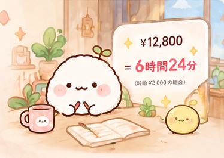
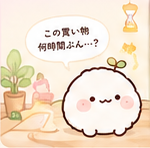
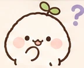
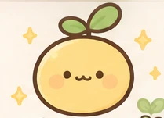
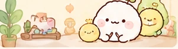
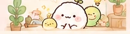

夜になると
財布のひもが
ゆるむみたい
買った割合
昼 31%夜 68%
値段を、あなたの「はたらく時間」に。
買う前にちょっと考えて、
本当にほしいものを選ぼう。
じきゅうちゃんと一緒なら、
自分でも知らなかった「ほしい」のクセも
見えてきます。

やさしくて がんばりやな
まるい生きもの
お金といっしょに暮らす
しっかり者のねこ
頑張るあなたに寄り添う
やさしいうさぎ
同じ値段でも、はたらく時間に換算すると、
少し違って見えるかもしれません。

この買い物、
何時間ぶん…？
時給 ¥2,000 の場合
がまんするのが正解とは限りません。
買ってもいい。もう少し考えてもいい。
大切なのは、一度立ち止まって選ぶこと。
これ、買う？

「今回はやめておこう。」
そんな選択も、じきゅうちゃんの世界では
小さな積み重ねになります。


欲しいものを全部あきらめるのではなく、
自分にとって大切なものを選ぶ。
Goalは、その理由を忘れないための場所です。
あと 42,800円
買いものの記録がたまると、
じきゅうちゃんが、あなたの傾向を見つけて
いろいろな発見を教えてくれます。
買った割合
買った割合
127回
小さな選択が、
こんなに育ったよ。
※ 数字と発見は、記録がたまったときの表示例です。
記録が増えると、じきゅうちゃんが
新しい「ほしい」のクセを見つけることも。
自分でも気づかなかったことを、
一緒に少しずつ見つけていきます。
なにか見つけたみたい…
新しいことを見つけたよ！
すぐ決めたもの 68%
12〜48時間置いたもの 31%

じきゅうちゃんと一緒に。
がまんするのが正解とは限りません。買ってもいいし、もう少し考えてもいい。じきゅうちゃんは、一度立ち止まって、自分にとって本当にほしいものを選ぶためのアプリです。
値段を、設定した時給で割って時間に換算します。たとえば時給2,000円なら、12,800円は6時間24分です。
2026年10月26日に、iPhone向けの日本語アプリとしてApp Storeで公開予定です。
あなたの記録を、大切に。
最終更新日：
THE WOOSYUME COMPANYは、「じきゅうちゃん」と公式ウェブサイトでの情報の取り扱いを、以下のとおり説明します。
入力した収入・時給、買いものの記録、商品情報、目標、キャラクターや着せ替えの設定は、お使いの端末内に保存します。「ほしい」のクセを見つけるための処理も端末内で行います。あなたが入力した収入・時給や買いものの記録を、外部サーバーへ自動送信することはありません。
保存した情報は、値段を「はたらく時間」に換算すること、選択を振り返ること、目標の進み具合や発見を表示すること、キャラクターとの体験を提供することに利用します。これらの入力内容や記録を、広告のためにアプリから送信することはありません。
広告：広告を表示する際は、Google AdMob（Google Mobile Ads SDK）を利用します。このサービスは、広告の配信・効果測定・不正防止などのため、IPアドレス、端末の識別情報、広告への操作、診断情報などを取得する場合があります。情報の取り扱いは、端末の設定、同意の状態、Googleのポリシーに従います。
Google プライバシーポリシー · Google Mobile Ads SDKのデータに関する説明
商品情報の取得：商品URLを取り込むときは、商品名・価格・画像などを取得するため、指定したウェブサイトや画像の配信元に接続します。接続先にはIPアドレスやアクセスしたURLなどが伝わります。接続先での情報の取り扱いは、そのサービスのポリシーに従います。
シェア：シェアカードなどを共有する場合は、あなたが選んだ内容を、選択した共有先へ渡します。共有する前に、カードに含まれる情報と共有先をご確認ください。
お知らせ機能は、通知を許可した場合に利用します。通知の許可は、iPhoneの設定から変更できます。保存した記録は、アプリの設定にあるデータのリセット機能で削除できます。端末のバックアップに含まれるデータは、Appleの設定とポリシーに従って管理されます。
このウェブサイトには、独自のアクセス解析ツール、広告、トラッキング用Cookie、個人情報を入力するフォームを設置していません。GitHub Pagesで公開する場合、配信元のGitHubが、サイトの提供や安全な運用のためにIPアドレスなどのアクセス情報を取り扱うことがあります。
機能や情報の取り扱いが変わった場合は、このページを更新します。最新の内容と更新日は、このページでご確認いただけます。
プライバシーに関するお問い合わせ窓口は、現在準備中です。窓口を公開する際は、公式ウェブサイトでお知らせします。